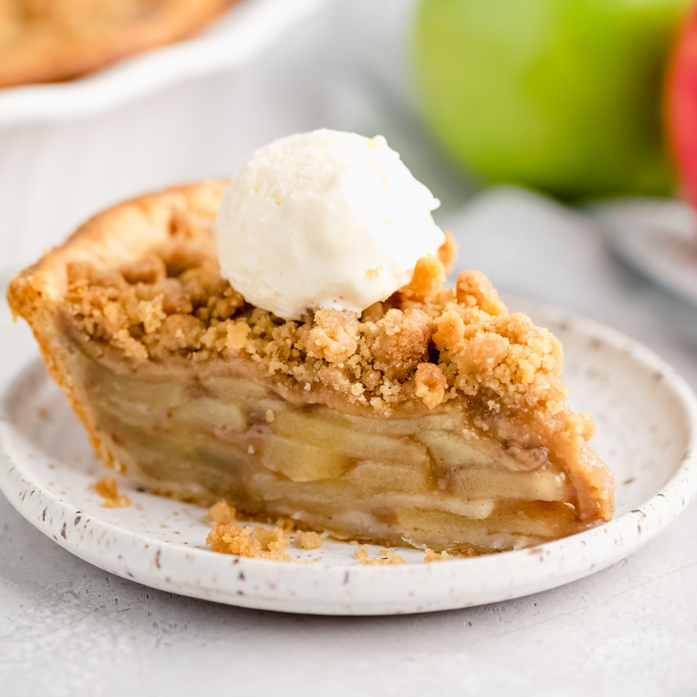

Apple Crumble

Description
This apple crumble is easy to make and works with pears, peaches, or
berries as well.
Ingredients
- 4 cups sliced peeled Granny Smith apples
- 1 tablespoon water
- 1 teaspoon lemon juice
- 1 cup white sugar
- ¾ cup all-purpose flour
- ½ teaspoon ground cinnamon
- ¼ teaspoon ground nutmeg
- ¼ teaspoon salt
- ½ cup cold unsalted butter, cut into small pieces
Steps
- Preheat the oven to 375 degrees F (190 degrees C).
-
Pile sliced apples in an 8x10-inch casserole dish. Mix water and lemon
juice together and sprinkle over apples.
-
Combine sugar, flour, cinnamon, nutmeg, and salt in a mixing bowl. Mix
well using an electric mixer. Add butter pieces and mix until clumpy.
Pour over apples, spreading to cover all but the outer edges.
-
Bake in the preheated oven until bubbly and golden, about 45 minutes.
Let cool slightly to thicken before serving in bowls.